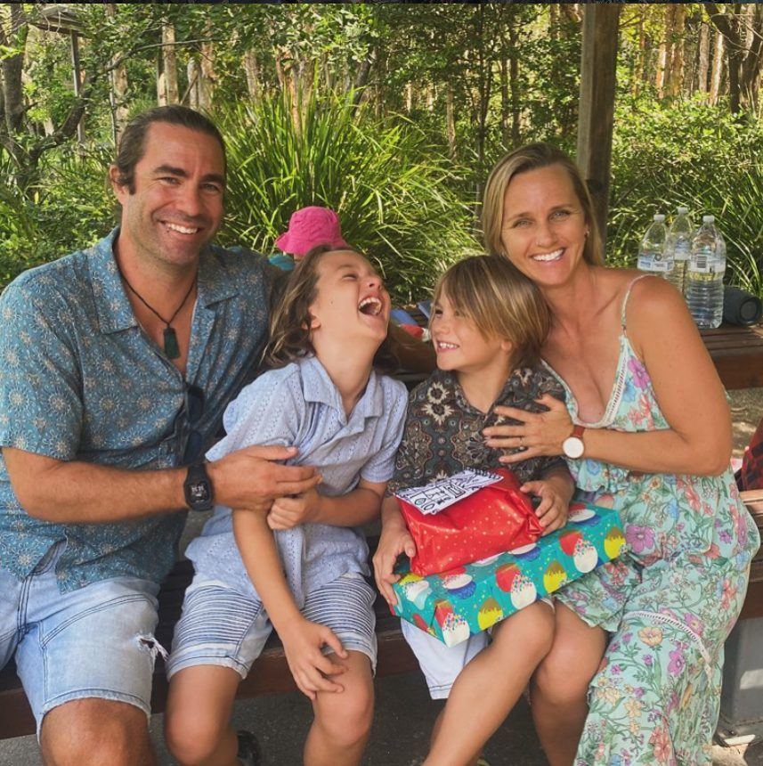

Built by a homeschooling parent, for homeschooling families
Liber was made by Adam Monaghan — a homeschooling parent in NSW — to solve a problem he had himself: knowing his kids were learning, but not being able to see or show it.

Hi, I'm Adam. I've been homeschooling my kids in New South Wales for six years.
I watched them spend hours exploring, building, asking questions and figuring things out. I knew they were learning — real learning. But whenever someone asked how homeschooling was going, I struggled to put it into words. Not because nothing was happening. Quite the opposite: there was so much curiosity and growth every day. I just couldn't see the whole picture clearly enough to explain it — to a relative, to myself, or to anyone official who might ask.
So I built Liber. I wanted a way to notice those everyday moments, hold onto them, and trust what I was already seeing. You capture a photo and a few lines as life happens, and over time it builds into a record you can look back on — and, when you need to, show.
What Liber is — and what it isn't
Liber is deliberately not a curriculum tool. No worksheets, no grades, no lesson plans, no school-at-home. It doesn't tell you what your children should be doing. It helps you see and keep the learning that's already there. That distinction is the whole point of Liber, and it's the line I'll always protect.
Made by a parent, not a boardroom
I'm a solo founder, building Liber in the open and learning as I go. It's made by someone who uses it for his own family — which means every decision gets weighed against one simple question: does this help a parent see their child's learning more clearly, without adding pressure? If it doesn't, it doesn't ship.
Say hello
I read everything. If Liber helps, if it doesn't, or if there's something you wish it did — I'd genuinely like to hear from you.